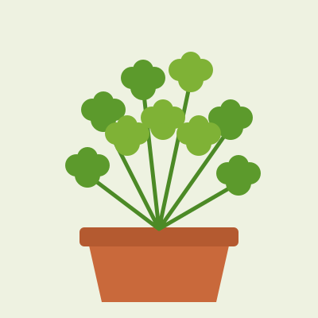
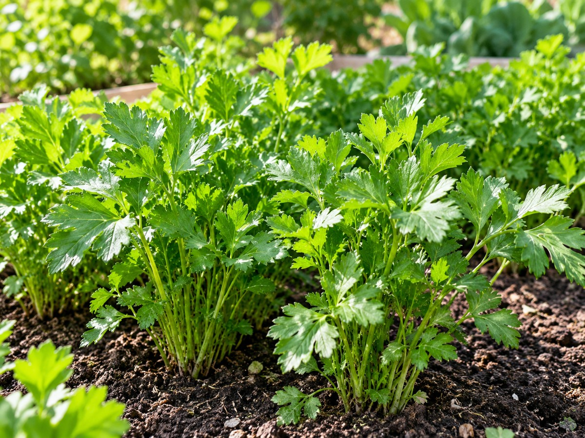

Imagem ilustrativa gerada por IA.
Imagem ilustrativa gerada por IA.Alface
Crescimento rápido. Boa para começar.
Ver ficha →
 Imagem ilustrativa gerada por IA.
Imagem ilustrativa gerada por IA.Cebolinha
Rebrota depois de cortada.
Ver ficha →

Imagem ilustrativa gerada por IA.Salsa
Demora a nascer e rende por muito tempo.
Ver ficha →Outras espécies
Plantas que também combinam com uma horta comunitária. Cada uma ganhará uma ficha própria.
Espécie
Coentro
Tempero de ciclo rápido. Não gosta de ser transplantado, então semeie direto no canteiro.
Espécie
Rúcula
Folhosa de ciclo curto. Dá colheitas rápidas e pode ser semeada aos poucos.
Espécie
Couve
Rende por muitos meses. Colha as folhas de baixo e deixe o centro crescer.
Espécie
Manjericão
Gosta de sol e calor. Beliscar as pontas faz a planta ficar mais cheia.
Espécie
Hortelã
Cresce muito e invade o canteiro. Prefira plantar em vaso.